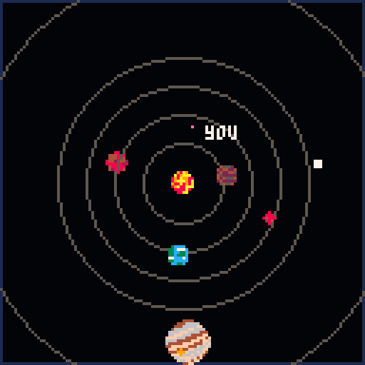
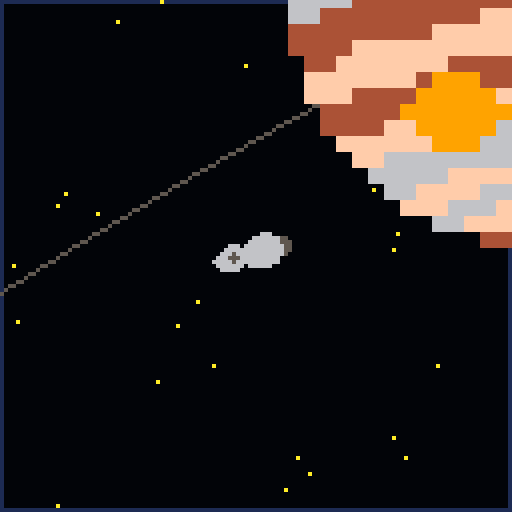
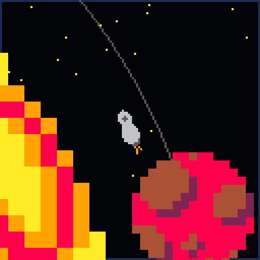

Orbits is a small solar system simulator I created in Lua using the Pico-8 fantasy console.
The game uses a polar coordinate system to define the orbits of planets and allows the player to pilot a spaceship using Newtonian physics simulations.


